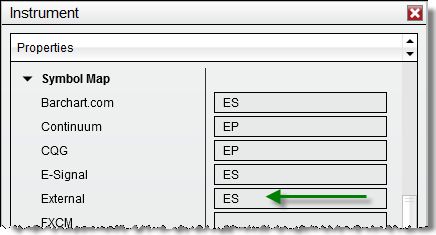
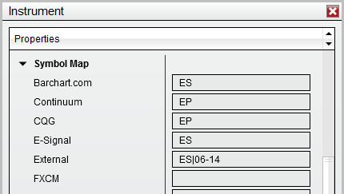

|
<< Click to Display Table of Contents >> TradeStation Symbol Mapping |


|
TradeStation Symbol Mapping
|
<< Click to Display Table of Contents >> TradeStation Symbol Mapping |
|
The following section outlines the requirements for proper TradeStation to NinjaTrader symbol mapping when using the Automated Trading Interface (both DLL or Email interface).
Note: Mapping is NOT required for stocks or Forex symbols.
 How to map an individual futures contract
How to map an individual futures contract
Mapping an Individual Futures ContractTo send orders via the NTExternalFeed strategy through the ATI to NinjaTrader from an individual futures contract such as the Emini S&P June contract "ESM14" in TradeStation you have to correctly set up mapping within NinjaTrader.
For this example, let's map the "ESM14" contract.
1. From the NinjaTrader Control Center window select the menu Tools and select the Instruments menu item. 2. Highlight the ES contract from the main grid which is the NinjaTrader S&P 500 Emini contract. 3. Press the "edit" button to bring up the Instrument window. 5. In the Symbol Map category for the External data feed set the value to "ES". 6. Press the "OK" button.
* The symbol map name "ES" in the image below needs to be the TradeStation symbol base name.

This procedure would be repeated for any other symbols you wish to map between TradeStation and NinjaTrader.
* Most popular futures contracts already have mapping set up |
 How to map a continuous futures contract
How to map a continuous futures contract
Mapping a Continuous Futures ContractNinjaTrader can map continuous contracts in one of two ways:
•Automatically map to the next closest expiration date •User defined contract mapping
For automatic mapping, follow the instructions above for "How to map an individual futures contract" otherwise follow the instructions below.
If you run the TradeStation Automated Trading Interface through the email protocol follow the instructions below. We will use the "@ES" continuous contract symbol and front month of June 2014 for example purposes.
1. From the NinjaTrader Control Center window select the menu Tools and select the Instruments menu item. 2. Highlight the ES contract from the main grid which is the NinjaTrader S&P 500 Emini contract. 3. Press the "edit" button to bring up the Instrument window. 5. In the Symbol Map category for the External data feed set the value to "ES|06-14". 6. Press the "OK" button.
* The symbol map name "ES|06-14" in the image below needs to be the TradeStation symbol base name.

Automated Trading Interface - Orders generated for "@ES" will now be routed to the NinjaTrader "ES 06-14" contract.
Please remember to change this when the contract rolls over. |